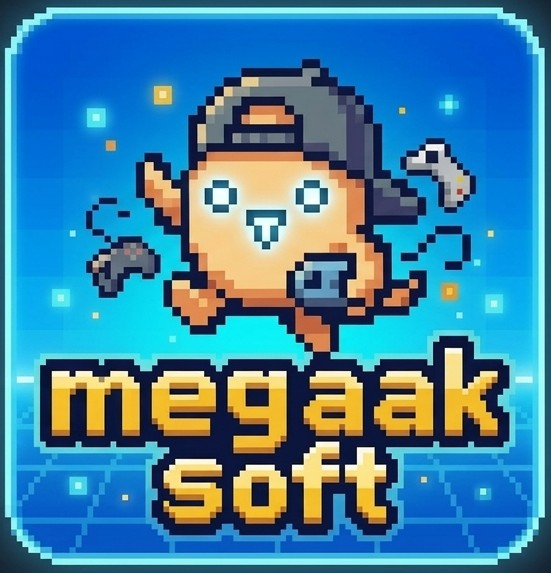

go-fmml
Go (Golang) 製、ゲームBGM組み込み向けの非同期FM音源＋PCM音源合成エンジンです。
https://github.com/megaak-soft/go-fmml
これは何か
go-fmml は、YAMAHA系FM音源チップの設計思想を参考にしたオリジナル実装のFMシンセシスコアと、WAVサンプ ルを鳴らすPCM音源コアを組み合わせ、独自のMML（Music Macro Language）テキストでシーケンスデータを記 述・再生できる、Goのライブラリです。ゲームプロジェクトに直接組み込んで、BGMを 非同期（呼び出し元をブロックしない）に再生することを主目的として設計されています。
音源合成やチップ仕様のエミュレーションではなく、「FM音源らしい音作りができる、MMLでBGMを書ける、 ゲームに組み込みやすい」ことを重視したオリジナル実装です。特定のハードウェアやエミュレータ、既存 OSSのレジスタ仕様・実装を移植したものではありません。
本プロジェクトは Claude
Code を用い、仕様書（CLAUDE.md）にエンジン仕様・MML仕様・フェーズ計画を詳細に記述
した上でAIに実装させる、いわゆる「仕様書駆動開発（Spec-Driven Development）」の手法で構築されてい
ます。
AIによるコード生成では、学習データに含まれるOSSコードの影響でGPL等コピーレフトライセンスのコード パターンが意図せず混入する「ライセンス汚染」のリスクが指摘されています。go-fmml では開発仕様書に ライセンス汚染排除のための実装ルールを明記し、コード生成のたびにAI自身へルール遵守をチェックさせ る運用で開発しています。go-fmml のソースコード自体はMITライセンスで提供されており、商用・ 配布・ゲームへの組み込みを含め自由に利用できます。詳細はライセンスページ を参照してください。
できること（機能一覧）
4オペレータ×8アルゴリズム、基本波形8種類(W1〜W8)、LFO （ビブラート）、最大16パート、1パートあたり最大16音ポリフォニック。
WAVサンプル再生。ドラムキット向けの oneShot（最大16サンプル ×パート）と、ピッチ可変の long（ループ・エンベロープ・LFO対応）の2タイプ、最大16パート。
独自MML仕様でFM/PCM合計32パートを時間軸ズレなく同期再 生。4/4拍子1小節を192分割した粒度でタイミング管理。
Schroeder型（軽量）/FDN型（高品質）から選択できるス テレオリバーブ。パート単位・oneShotノート単位でセンドレベルを指定可能。
ポルタメント、ピッチベンドアップ/ダウン、パートミュート/ソ ロ、トランスポーズ、コンダクターパート（テンポ変化・ループジャンプ地点）。
Play/Pause/Resume/Stop/Rewind/SkipPlay、マスターボリューム （即時・スムーズ変更）、フェードイン/フェードアウト/フェードイン&アウト再生。
ファイル読み込み（絶対パス／embed.FS）に加え、
Go文字列リテラルとしてMML／FM音色／PCM音色データを直接渡すことも可能。
付属ツール Smf2GoFMML でスタンダードMIDI
ファイル(Format1)を読み込み、go-fmmlのMML仕様へ変換して出力。
動作環境
| 項目 | 要件 |
|---|---|
| Go | 1.24.0 以上（依存する ebitengine/oto/v3 が要求する最低バージョンに
準拠） |
| 対応OS | Windows / macOS / Linux / Android / iOS / WebAssembly（音声出力に使用する
ebitengine/oto/v3 の対応プラットフォームに準拠） |
デモを試す
実際に音を鳴らして動作を確認できる最小サンプルを cmd/mmldemo に同梱しています。
FM音色ファイル・MMLファイルの読み込みから再生までの一連の流れを実装した例です。
cd cmd/mmldemo
go run .パフォーマンス特性
音声レンダリングはサンプル単位のソフトウェア合成です。目安として把握しておくべき点は以下の通り です。
- 1パートあたり最大16音、FM16パート＋PCM16パートの全32パートを同時稼働させた場合が理論上の最 大負荷です。実際の楽曲では全パート・全音が常時鳴り続けることは稀なため、通常の使用（数〜十数パー ト、パートごと数音のポリフォニック）ではオーディオコールバックのCPU負荷は小さく収まります。
- リバーブは全体で1系統のみインスタンス化されます（マスターに1個）。Schroeder型はディレイ
ラインとオールパスフィルタの少数構成、FDN型はフィードバック・ディレイ・ネットワークで、Schroeder
型よりやや計算コストが高くなります。リバーブ未使用時（
reverb: false）は完全にバイパ スされ、処理コストはかかりません。リバーブ内部演算は軽量化のためfloat32を使用してい ます。 - PCM波形はメモリ上にデコード済みの
float32サンプル列として保持されます。同一WAV ファイルは重複読み込みされず、一度読み込んだ波形データはキャッシュされ使い回されます （LoadPCMVoiceFile/LoadPCMVoiceFileFS/SetPCMVoiceData共通）。 - メモリ確保は主に音色登録・シーケンス読み込み時（曲の切り替わり時）に発生し、発音処理そのもの はホットパスでの新規アロケーションを避ける設計です。
ebitengine/oto/v3 との関係
音声出力には Ebitengine
プロジェクトの github.com/ebitengine/oto/v3 を使用しています。go-fmml の
fmcore.NewEngine は内部で oto のオーディオコンテキストを初期化し、生成した
*fmcore.Engine 自体が oto の oto.Player が要求する
io.Reader（Read([]byte) (int, error)）を実装しているため、そのまま
oto のプレイヤーにセットして再生できます。
すでに自前で oto のコンテキストを保持しているアプリ（例えば同時にEbitengineの他の音声再生も行って
いる場合）向けに、oto コンテキストを自前管理し go-fmml 側では音声デバイスを開かない
fmcore.NewEngineWithoutOutput も用意しています。コード例は次項を参照してください。
go-fmml は内部でいくつかのOSSライブラリに依存しています（間接依存を含む）。各ライブラリの著作権は それぞれの著作者に帰属し、go-fmml のMITライセンスとは独立してそれぞれのライセンス条件が適用され ます。依存ライブラリの一覧とgo-fmml自体の利用条件（MITライセンス）は ライセンスページにまとめています。
Go言語での利用例（コードサンプル）
基本形：go-fmmlが音声出力を管理する場合
package main
import (
"log"
"github.com/megaak-soft/go-fmml/fileio"
"github.com/megaak-soft/go-fmml/fmcore"
"github.com/megaak-soft/go-fmml/player"
)
func main() {
if err := fileio.LoadFMVoiceFile("voice_fm.yaml"); err != nil {
log.Fatal(err)
}
if err := fileio.LoadPCMVoiceFile("voice_pcm.yaml"); err != nil {
log.Fatal(err)
}
if err := fileio.LoadMMLFile("bgm1.mml"); err != nil {
log.Fatal(err)
}
// 44.1kHzでオーディオデバイスを開き、内部でoto/v3のコンテキストを初期化・再生開始する。
engine, err := fmcore.NewEngine(44100)
if err != nil {
log.Fatal(err)
}
defer engine.Close()
onComplete := func() { log.Println("再生終了") }
if err := player.Play(engine, "bgm1", onComplete); err != nil {
log.Fatal(err)
}
select {} // ゲームループ等、アプリ側の待機処理に置き換える
}
Ebitengine自身の oto/v3 コンテキストと併用する場合
package main
import (
"github.com/ebitengine/oto/v3"
"github.com/megaak-soft/go-fmml/fileio"
"github.com/megaak-soft/go-fmml/fmcore"
"github.com/megaak-soft/go-fmml/player"
)
func setupBGM(otoCtx *oto.Context) (*fmcore.Engine, error) {
if err := fileio.LoadFMVoiceFile("voice_fm.yaml"); err != nil {
return nil, err
}
if err := fileio.LoadMMLFile("bgm1.mml"); err != nil {
return nil, err
}
// オーディオデバイスは開かず、go-fmmlをただのio.Readerとして使う。
engine := fmcore.NewEngineWithoutOutput(44100)
// 既存のotoコンテキストに、go-fmmlのエンジンをプレイヤーとして登録する。
p := otoCtx.NewPlayer(engine)
p.Play()
return engine, player.Play(engine, "bgm1", nil)
}
文字列リテラルからMML/音色を直接読み込む場合（Phase 7）
const mml = `
[GoFMML File]
[global]
tempo: 128
sequenceID: demo
loop: true
[partSetting]
part:
- partNo: 1
voiceID: 0
volume: 100
pan: 0
[part1]
O4 L4 C D E F G A B O5 C
[part1End]
`
fileio.SetMMLTextData(mml)
各種パラメータの詳しい記載方法・設定可能範囲は、左のナビゲーションから各仕様ページ を参照してください。
作者について

「MEGAAK SOFT」はインディーズゲーム開発個人プロジェクト、レトロ風2Dゲームを作っています。